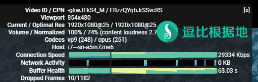

在前段时间开会期间，大量主流代理协议软件被针对、干扰、封IP等，我觉得我或许要把目光放到小众代理软件上，或许有奇效，正好昨天Brook更新了新版本，更新了新协议，我就更新了我以前写的脚本和教程，顺便试一下效果，发现速度很快（至少我这里测试效果速度比SSR快），考虑到我以前写的Brook教程都挤到最前面去了，所以我再简单介绍一下。
Brook简单介绍
Brook 是一个高效的 Socks5 代理软件，官方支持Windows、Linux、MacOS、IOS、Android、树莓派等设备，同时是使用 Golang 语言编写，安装、使用异常简单。
Brook 支持 自主研发 Brook（新版） 协议+Stream Brook（旧版）协议、Shadowsocks 协议、SOCKS5 协议、TCP/UDP 转发、SOCKS5代理转HTTP代理 等功能。
Brook 支持 UDP转发，无需任何设置。
支持单端口和多端口(每个端口可以单独设定密码)，这点类似于 Shadowsocks 和 ShadowsocksR 的单用户服务端。
Github项目：https://github.com/txthinking/brook
如何使用？
服务端 一键脚本
此脚本支持 多端口多密码方式（少量人使用或合租），支持切换新旧混淆协议。
服务端 手动教程
客户端 使用教程
客户端支持PAC（默认支持不需要任何设置，客户端会自动更新最新GFWList PAC）
速度测试
注意：以下测试仅代表我本地的情况，其他地区仅供参考。
环境为：联通运营商，同一个VPS，同一个时间（因为是错开时间测试的，会相差几分钟）
ShadowsocksR 测试
ShadowsocksR配置：aes-128-ctr / auth_aes128_md5 / tls1.2_ticket_auth

Brook 测试
Brook配置：Brook协议（就是新版协议，默认的）

转载请超链接注明：逗比根据地 » 在 主流代理软件 被针对的现在，推荐一个小众好用的代理软件 — Brook
责任声明：本站一切资源仅用作交流学习，请勿用作商业或违法行为！如造成任何后果，本站概不负责！


brook_windows_amd64.exe（或386）放到 D盘，也就是D:\brook_windows_amd64.exe （不要放到中文文件夹内），那么运行CMD程序，输入D:\brook_windows_amd64.exe --help运行后如果正常输出就继续。接下来的使用方法就是关于 代码后面的参数了，和Linux是通用的：https://doub.io/brook-jc1/#使用方法
比如：
Windows 64位 客户端：https://github.com/txthinking/brook/releases/download/v20171113/Brook.exe
原理？目前所有基于SOCKS5协议的代理软件原理都是一样的（SS/SSR/V2RAY/BROOK等），在SOCKS5协议的基础上，对数据进行加密，然后做进一步混淆处理，然后就传输到服务端喽，服务端返回同理。
2. Brook的加密、协议、混淆都是固定的，类似于以前的SS原版一样（协议和混淆等操作只有一个并且固定，所以没有这方面选项，后来才衍生出SSR这种多协议多混淆的），不过Brook还有另一个混淆协议stream brook，我的服务端手动安装教程里也写了。
3. Brook和SS/SSR都是基于SOCKS5代理，然后在此基础上做一次加密、做一次混淆等，大体原理一样（实际上大部分专门穿透GFW的代理软件都是这样的原理），不过具体到代码是不同的。
4. Brook的隐蔽性、速度、稳定、数据安全，我说了不算，自己试。
5. Brook持续开发有一年了，目前依然积极更新，不过以前很小众知道的人不多，不过估计经过我的宣传后，用的人会增加不少，然后作者积极性也会增加（毕竟软件写出来是给大家用的，用的人越多作者越开心，而且更有利于提建议和反馈BUG）。
6. Brook开源，本文章和服务端手动安装教程、客户端使用教程页面头部皆有注明。
通过以上的几个问题可以看出，你根本没看或者没仔细看本文章和 服务端手动安装教程 等文章，如果仔细看了，就不会问 1 2 5 6 这种问题了。
扩展SwitchyOmega：
添加一个代理服务器：SOCKS5 127.0.0.1 1080
再添加一个 情景模式，然后规则列表网址：https://raw.githubusercontent.com/gfwlist/gfwlist/master/gfwlist.txt，情景模式选择刚才添加的 代理服务器名字。
然后 扩展选择刚才添加的情景模式即可。
另外Brook还有一个特殊的混淆协议：Stream，不过一般用不上，我试过用了速度会下降很多。